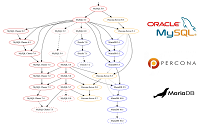

1.4.- Instalación de la base de datos
Caso práctico
María y Juan tienen claro que los datos de la aplicación que tendrán que programar deberán almacenarse en una base de datos. En su proyecto de prueba han estado valorando diferentes sistemas gestores de bases de datos, cada uno por su cuenta, y ahora, van a ponerlos en común:
—Juan, he estado mirando diferentes opciones para nuestro proyecto de prueba —comenta María—. Podríamos utilizar alguna base de datos de las que ya hemos visto en el ciclo. ¿Qué piensas de MySQL o PostgreSQL?
—Yo he valorado también esas dos bases de datos, pero después de darle vueltas al asunto, pienso que instalar un sistema gestor de base de datos para realizar un proyecto de prueba es excesivo. Tampoco sabemos que base de datos utilizaremos finalmente —responde Juan.
—¿Y qué solución propones entonces?
—No lo sé, creo que quizás sería mejor preguntarle a Ada, a lo mejor ella nos puede orientar.
Después de un ratito hablando con Ada tienen las cosas más claras. Les ha propuesto que utilicen H2 para realizar su proyecto de prueba, una base de datos muy ligera que se usa principalmente a la hora de desarrollar. Pero eso sí, deben tener en mente que el proyecto del cliente se hará sobre MySQL.

¿Qué es lo primero que tenemos que hacer, para poder realizar consultas en una base de datos?
Obviamente, instalar la base de datos.
Dada la cantidad de productos de este tipo que hay en el mercado, es imposible explicar la instalación de todas. Así que vamos a optar por una, en concreto por MySQL, ya que es un sistema gestor de base de datos gratuito y que funciona en varias plataformas.
Para instalar MySQL en Windows puedes seguir los pasos que te detallamos en la siguiente presentación, descargando el instalador de la página oficial:
Si utilizas Linux, el sitio de descarga es el mismo que el indicado en el vídeo anterior, y la instalación la puedes hacer con los pasos que te indican en el enlace siguiente:
Debes conocer
Aparte de MySQL, también te proponemos probar con una base de datos que no necesita instalación. Se trata de H2 y es una base de datos relacional embebida compatible con MySQL. ¿Y eso que quiere decir? Quiere decir que lo único que hay que hacer para utilizar H2 es añadir a nuestro proyecto la librería de H2 (archivo .jar), no requiere por tanto instalación dado que la librería va incorporada en nuestro mismo código:
En la página anterior encontrarás muchas descargas, pero la única que realmente necesitarás será el archivo .jar (Jar File). H2 es software libre y es una base de datos ligera muy usada en la fase de desarrollo. Cuando ya se tiene un producto viable, normalmente se sustituye por una base de datos más potente. A continuación tienes un proyecto base para NetBeans que ya incorpora H2, listo para usar.
Proyecto base para NetBeans que utiliza H2 (zip - 2.14 MB).
Si abres el proyecto anterior, verás que incluye código para crear la estructura de la base de datos y un ejemplo de consulta visto en apartados anteriores.
Para saber más
De MySQL se escindieron otras bases de datos, como MariaDB y Percona, que cada vez están teniendo mayor número de seguidores.
En el siguiente enlace puedes obtener información sobre MariaDB

Autoevaluación
Retroalimentación
Verdadero
De no ser así será imposible conectarnos a la base de datos.